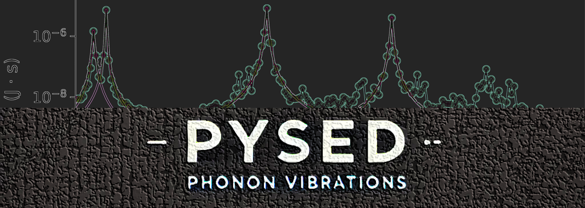

Software
Open computational tools for atomistic simulation analysis
Software projects are maintained as reproducible research infrastructure, with documentation, examples, publication support, and direct links to source repositories.

Browse maintained software and related GitHub projects for atomistic simulation workflows. GitHub profileProjects
Maintained software
GitHub
More code and research utilities
The software list highlights maintained tools. Additional scripts, examples, and project repositories are collected on my GitHub profile.
Workflow
How the tools fit into the research pipeline
01 / PESMaker
Application-oriented MLP datasets
Build application-oriented training sets with foundation-potential-assisted workflows.
02 / MLPs
MD trajectories
Run atomistic simulations with classical, hybrid, or machine-learning potentials.
03 / pySED
SED analysis
Extract kinetic-energy-weighted phonon dispersion and lifetime information.
04 / Transport
Transport insight
Connect phonon-level observables to thermal transport mechanisms.